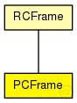

This documentation is released under the Creative Commons license
This documentation is released under the Creative Commons licenseRepresents a Protocol Control Frame (PCF)
See also: RCFrame
Author: Till Steinbach
The following diagram shows usage relationships between types. Unresolved types are missing from the diagram. Click here to see the full picture.
The following diagram shows inheritance relationships for this type. Unresolved types are missing from the diagram. Click here to see the full picture.
| Name | Type | Description |
|---|---|---|
| RCFrame | packet |
Represents a RC frame |
| Name | Type | Description |
|---|---|---|
| integration_cycle | uint32_t |
pcf_integration_cycle: Represents the integration cycle in which the protocol control frame was sent 32 Bit field |
| membership_new | uint32_t |
pcf_membership_new: Bit vector with a static configured one-to-one relationship from a bit to a Synchronization Master 32 Bit field |
| sync_priority | uint8_t |
pcf_sync_priority: Static configured value in each Synchronization Master, Synchronization Client, and Compression Master 8 Bit field |
| sync_domain | uint8_t |
pcf_sync_domain: Static configured value in each Synchronization Master, Synchronization Client, and Compression Master 8 Bit field |
| type | uint8_t |
pcf_type: Defines the frame type of a Protocol Control Frame 4 Bit field |
| transparent_clock | uint64_t |
pcf_transparent_clock: stores the accumulated delay of a Protocol Control Frame up to the consumer. Time is represented as multiples of picoseconds 64 Bit field |
| displayString | string | |
| ctID | uint16_t | |
| ctMarker | uint32_t | |
| dest | MACAddress | |
| src | MACAddress | |
| frameByteLength | int |
frame length without physical layer overhead (preamble, SFD, carrier extension); used by MAC layer |
// // Represents a Protocol Control Frame (PCF) // // @see RCFrame // // @author Till Steinbach packet PCFrame extends RCFrame { // pcf_integration_cycle: Represents the integration cycle in which the protocol control frame was sent // // 32 Bit field uint32_t integration_cycle; // pcf_membership_new: Bit vector with a static configured one-to-one relationship from a bit to a Synchronization Master // // 32 Bit field uint32_t membership_new; // pcf_sync_priority: Static configured value in each Synchronization Master, Synchronization Client, and Compression Master // // 8 Bit field uint8_t sync_priority; // pcf_sync_domain: Static configured value in each Synchronization Master, Synchronization Client, and Compression Master // // 8 Bit field uint8_t sync_domain; // pcf_type: Defines the frame type of a Protocol Control Frame // // 4 Bit field uint8_t type; // pcf_transparent_clock: stores the accumulated delay of a Protocol Control Frame up to the consumer. // // Time is represented as multiples of picoseconds // // 64 Bit field uint64_t transparent_clock; string displayString = "b=15,15,rect,white,orange,5"; }
This documentation is released under the Creative Commons license